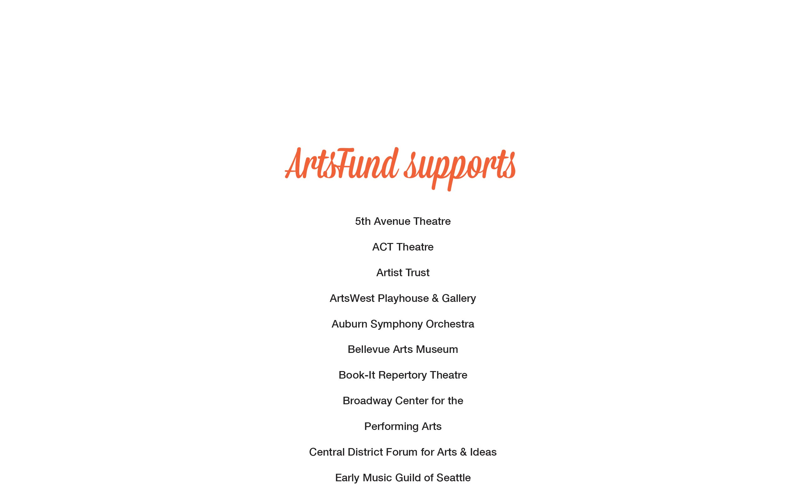
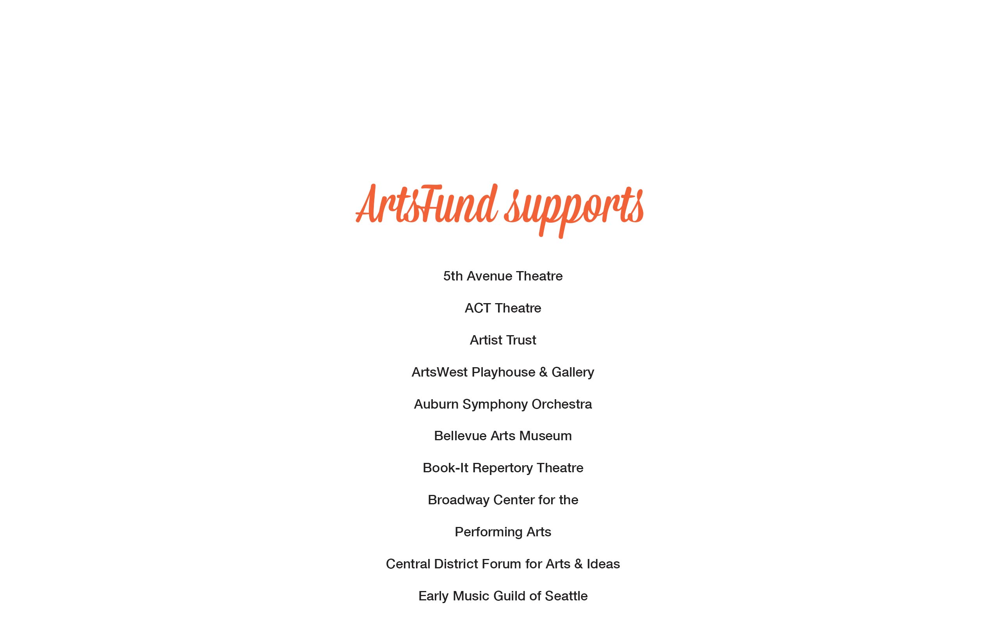

ArtsFund + Getty Images
Fundraising Campaign . Visual Design . 2014
Getty Images wanted to engage employees to give back to the community. I joined a committee that conducted an internal employee fundraiser for ArtsFund, a local non-profit that supports a wide variety of Puget Sound arts groups. I was in charge of creating the message, theme, and marketing materials for the event.
Art surrounds us
When you work at Getty Images you often forget about the stunning collection of photography that you work with every day. The major focus of this fundraising campaign was to remind employees that art really does surround us. I hand-selected a spectrum of colorful, textural photographs that captured art in progress.
Promoting the fundraiser
I created invites, posters, and digital media that were distributed throughout the office to promote the fundraiser. All materials emphasized the theme of life with art.

Creative fortunes
In addition to the marketing materials, we included customized fortune cookies, produced in the International District and printed with short quotes by famous artists.
Day-of promotionals
On the day of the fundraiser we took over office digital displays to showcase information about the fundraiser and ArtsFund. The displays provided a quick snapshot of ArtsFund, and how prolific and important it is in the community.

 



Key takeaways
The campaign was so successful that it raised twice the funds from the previous year and was ArtsFund's most successful internal employee fundraising campaign to date. They asked to use the visual materials as an example for other companies conducting similar campaigns.
More Work

PicMonkey - Mobile App

Getty Images - Image.net Redesign

Experimental Typography
Seattle Central College - Window Installation